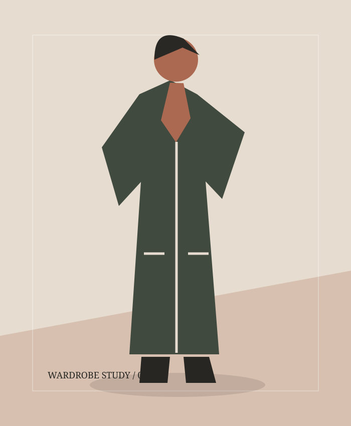
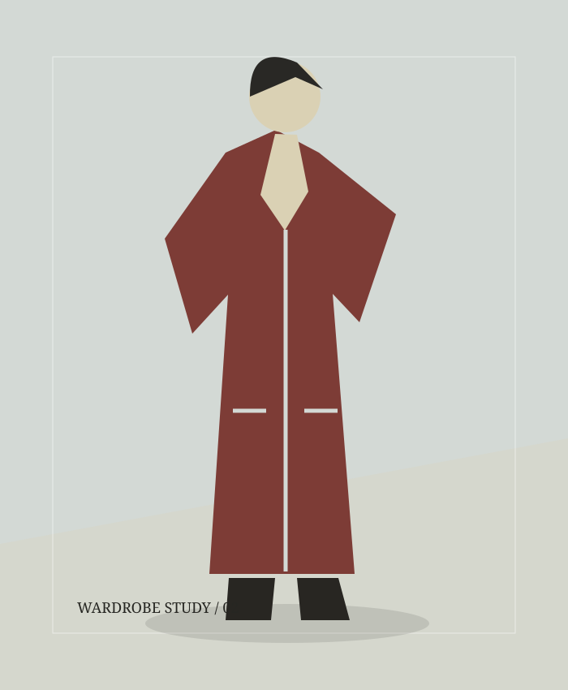
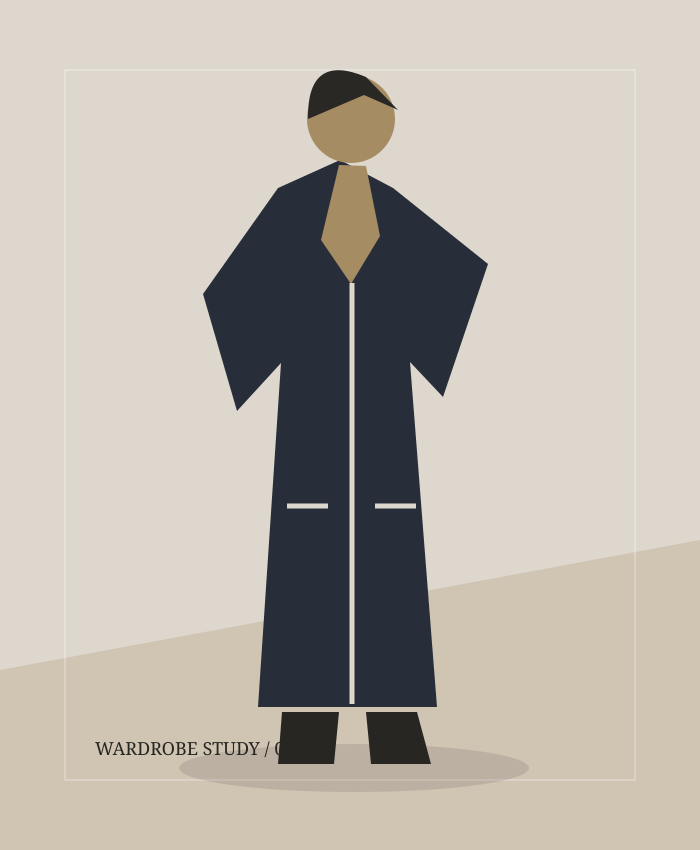
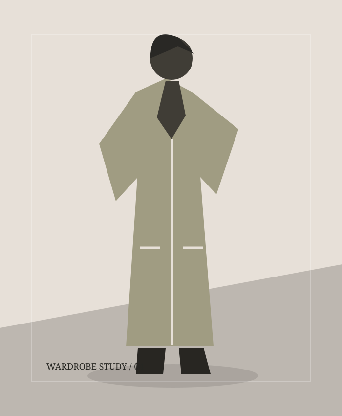
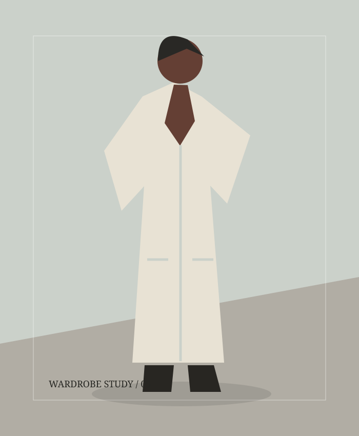
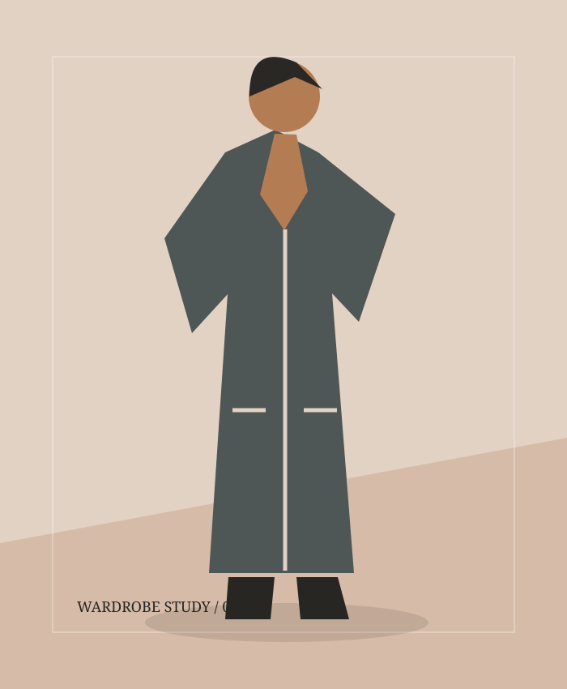

Trends
Six wardrobe ideas worth returning to
Summary-only sample. Read the representative story: Six wardrobe ideas worth returning to
A thoughtful edit of shapes, textures and small styling shifts.
Local edition preview. Editorial samples stay the same.
The style edit / November 2026
Ideas to keep. Details to notice. Style on your own terms.

The long view
From a generous coat to a well-placed layer, we revisit six familiar ideas with fresh eyes.
Read the storyTrends
Summary-only sample. Read the representative story: Six wardrobe ideas worth returning to
A thoughtful edit of shapes, textures and small styling shifts.

Fashion
Summary-only sample. Read the representative story: Six wardrobe ideas worth returning to
A closer look at proportion, from the shoulder to the hem.

Guides
Summary-only sample. Read the representative story: Six wardrobe ideas worth returning to
Start with what you carry, then consider the details.

Trends
Summary-only sample. Read the representative story: Six wardrobe ideas worth returning to
An autumn palette with a little unexpected contrast.

Fashion
Summary-only sample. Read the representative story: Six wardrobe ideas worth returning to
Familiar pieces find a new rhythm.

Guides
Summary-only sample. Read the representative story: Six wardrobe ideas worth returning to
Texture, fit and care: questions to ask before you choose.